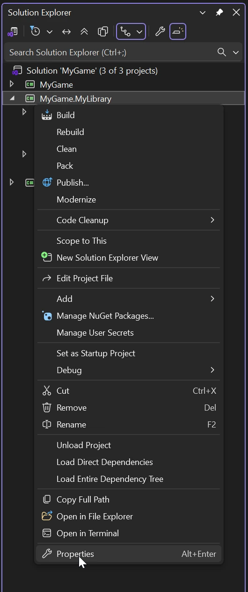
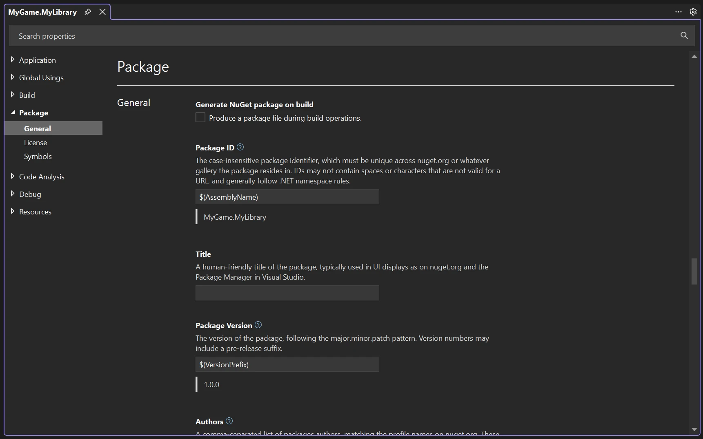
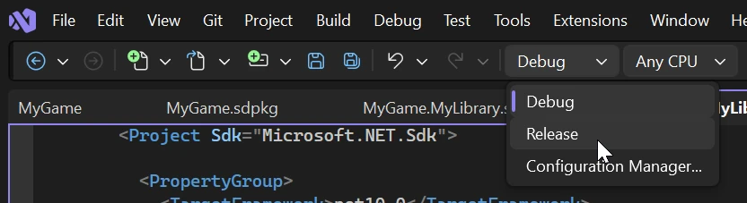
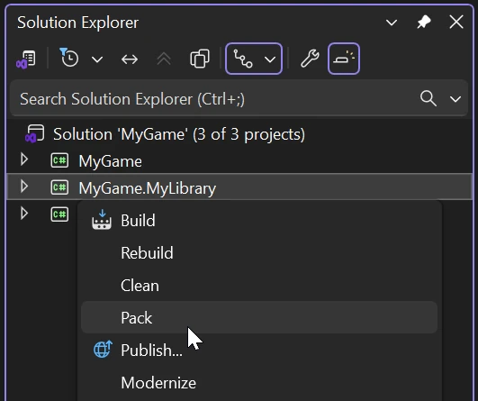
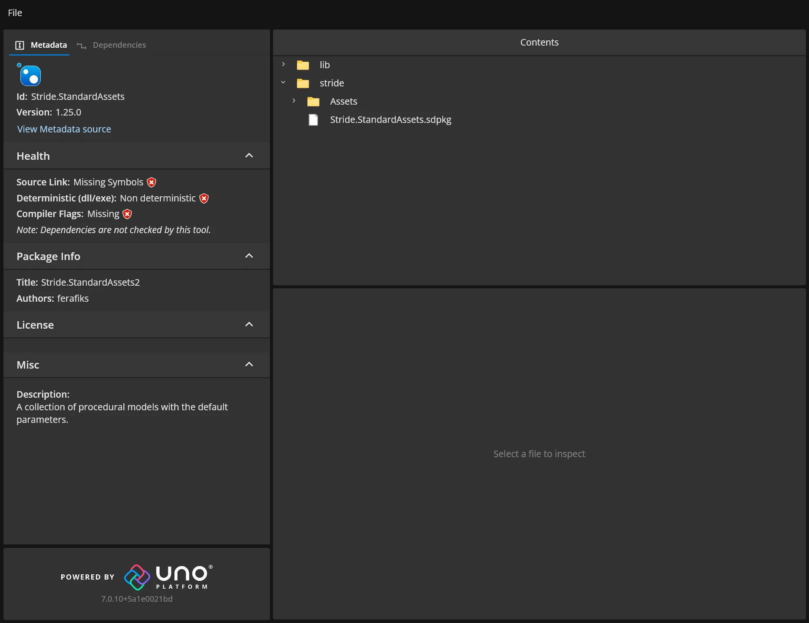

Publish a NuGet package
Intermediate
This is a guide on how to publish and share a Stride package.
Setup
Before a package can be published, it first has to be properly setup in order to work with Stride and C#.
Changing metadata
You'll need to change the package's metadata in order to publish it on the internet.
In the Solution Explorer panel, right click on your package and select Properties.

In the Package tab, fill out all the fields you need.

Warning
The package id needs to be the same as the .csproj file's name in order to avoid complications.
For more information about how to correctly fill out metadata, visit the Microsoft documentation.
Add the module initializer
If Stride is failing to load your custom package, you'll have to manually register it using a module initializer.
To do this, create a Module.cs file in the root of your package and add the below code to it:
using Stride.Core.Reflection;
using Stride.Core;
using System.Reflection;
namespace MyNamespaceHere;
internal class Module
{
[ModuleInitializer]
public static void Initialize()
{
AssemblyRegistry.Register(typeof(Module).GetTypeInfo().Assembly, AssemblyCommonCategories.Assets);
}
}
Check the .sdpkg file
Note
If your package doesn't have a .sdpkg file and it only includes code, you can skip this step.
The .sdpkg file's name has to match the package id and the .csproj file's name exactly. If it's incorrect, the engine won't load it and in turn, it will prevent it's assets from loading.
Including assets and resources
Note
If your package doesn't have a .sdpkg file and it only includes code, you can skip this step.
Without proper setup, the packing process will ignore any non-code content.
To make NuGet include stride files in the package, you'll have to modify the .csproj file of the package and include these lines:
<ItemGroup>
<None Include="*.sdpkg" Pack="true" PackagePath="stride"/>
<None Include="Assets/*.*" Pack="true" PackagePath="stride/Assets"/>
<None Include="Resources/*.*" Pack="true" PackagePath="stride/Resources"/>
<None Include="Effects/*.*" Pack="true" PackagePath="stride/Effects"/>
</ItemGroup>
Explanation
The <None> item tells C# not to treat the specified files in Include as code. This is what it already did, but by explicitly stating this, we can set additional parameters. This includes setting Pack to true in order to include these items in the package as normal files and specifying the PackagePath to make sure they are placed in the correct directory inside of the package.
Note
If your package includes more directories outside of Assets, Resources and Effects, make sure to create separate entries for them.
Packing
Once you've setup your package correctly, you can pack it to create a .nupkg file, that can be easily shared with other people.
Before starting, change the configuration of your project to Release mode.

After that, right click the package in the Solution Explorer panel and select Pack.

Once the process is done, the .nupkg file will be created in /packageLocation/bin/Release.
Checking the package contents
You can check to see if the package's contents were generated correctly by using nuget.info - a website for inspecting .nupkg files.

Things to look out for:
- Make sure everything related to Stride is located in the
stridefolder. - Make sure the
.sdpkgfile is located in ~/stride and that it's name matches the package id.
Publishing your package
You can publish your package on nuget.org directly from the website, or by using commands like dotnet or nuget.